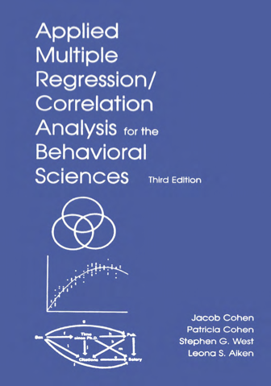
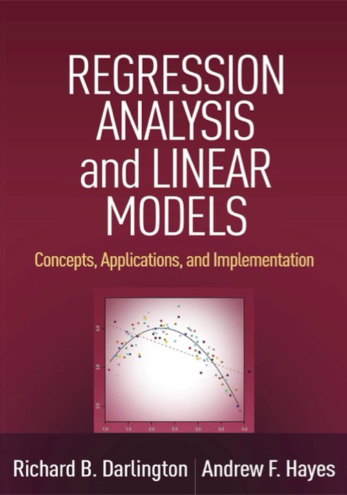
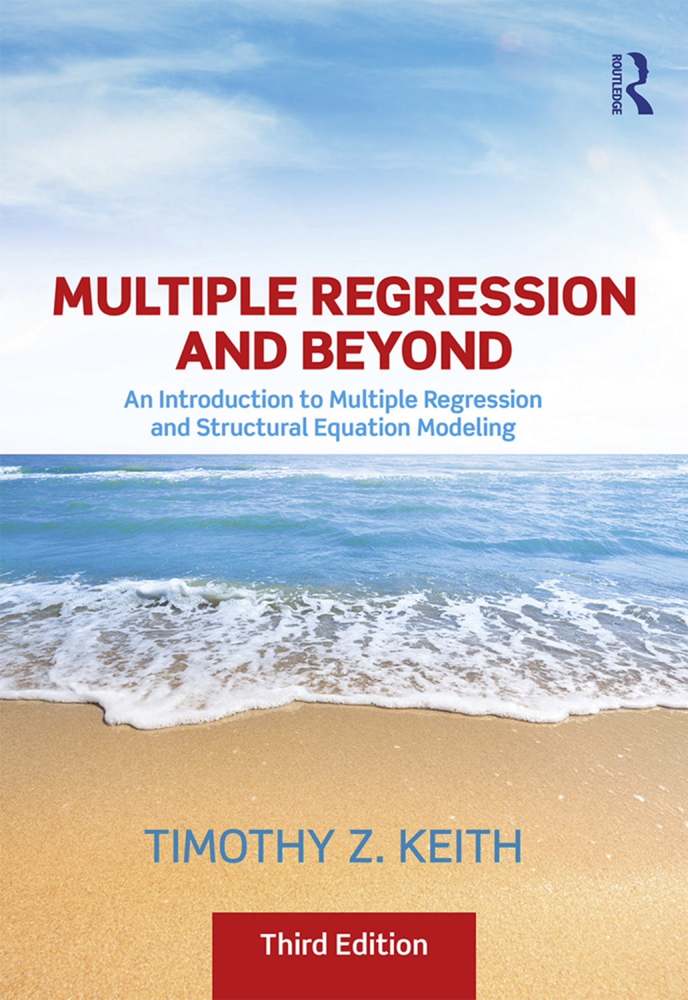

Welcome
차의과학대학교 임상상담심리대학원 심리통계, 2023 1학기
강의 정보
Instructor: 조성균, sk.cho@snu.ac.kr
Office Hours: 수업 후
Teaching Assistant: 홍신영
Class Meetings: 목 7:00 ~ 9:50PM
Website: r.modellings.art
과제: Notice
질문: Communicate/Ask
강의 개요
전통적인 통계 커리큘럼에서 조금 벗어나 programming 언어인 R과 graphical tools의 도움을 받아 통계적인 통찰을 얻는 방식으로 진행하고자 함. 예제를 중심으로 직접 분석하고, 통계 이론의 설명은 체계적으로 전개하기보다는 그때 그때 필요한 부분을 부연 설명하고자 함.
본 강의는 주로 회귀분석(regression analysis)에 초점을 맞추며, 그 근본 원리를 이해하고 의미를 파악하여, 현상을 올바로 분석하고, 적절한 분석기법을 적용할 수 있도록 도움을 주고자 함.
수업은 대략 4개의 섹션으로 나눔
- R tutorial
- 통계의 활용에 대한 전반적인 소개
- 회귀 분석 (regression analysis)
- 인과 분석 (causal analysis)
교재
- 주로 강의 노트를 위주로!
- R인 액션 - 빅데이터 분석도구, 홍릉 / R in Action (2e) by Rob Kabacoff
- Statistical Modeling (2e) by Daniel T. Kaplan
R 참고도서
- R for Data Science by Wickham & Grolemund / 2nd edition in progress
통계 참고도서
- Applied Multiple Regression/Correlation Analysis for the Behavioral Sciences By Jacob Cohen, Patricia Cohen, Stephen G. West, Leona S. Aiken
- Regression Analysis and Linear Models by Richard B. Darlington & Andrew F. Hayes
- Multiple Regression and Beyond (3e) by Timothy Z. Keith



수업 활동
출석 (5%), 일반과제 (15%), 중간고사 대체 과제 (20%), 기말고사 (30%), 개별 프로젝트 (30%)